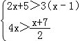
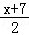

2016年北京市中考数学试题 · 数学解答题 第18题 · 对应解析
18．（5分）（2016•北京）解不等式组：

．【解答】解：解不等式2x+5＞3（x﹣1），得：x＜8，
解不等式4x＞

，得：x＞1，∴不等式组的解集为：1＜x＜8．
18．（5分）（2016•北京）解不等式组：

．【解答】解：解不等式2x+5＞3（x﹣1），得：x＜8，
解不等式4x＞

，得：x＞1，∴不等式组的解集为：1＜x＜8．